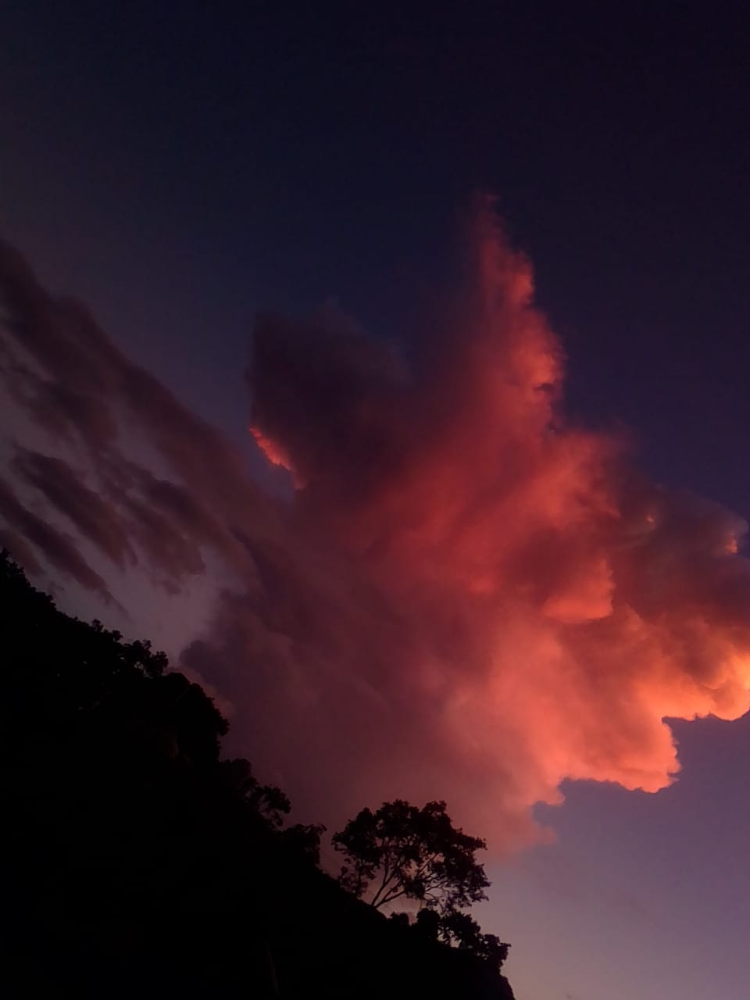

Pagina de reforestación
Pagina de reforestación
Pagina de reforestación
Pagina de reforestación
la comunidad de san cristobal de los baños los invita a participar en nuestra proxima jornada de reforestacion el dia 1 de junio.
el dia 20 de julio se les invita a reforestar los lugares donde alla pocos arboles en San Crisrobal de los Baños
A si mismo tendremos programada otra reforestacion para el 15 de agosto en la presa mata burro de San Cristobal de los Baños.
sembrar un arbol es sembrar vida acompañanos
